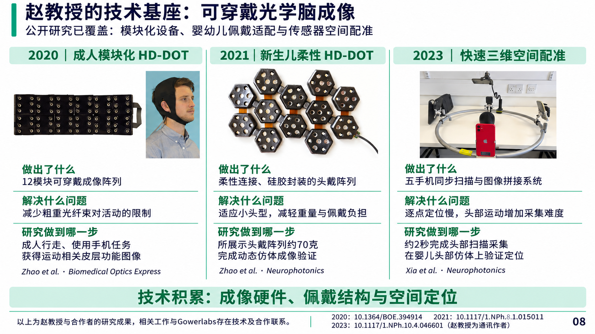

前面我们看了外部公司的技术和产品。接下来回到赵教授：他已经做出了什么，这些研究为公司提供了怎样的技术基础？
这一页放了三项具体成果，分别对应三个工程问题：设备怎样戴到头上，怎样适应婴幼儿，以及怎样知道传感器测的是哪个位置。
先看左边，2020年的成人模块化设备。赵教授是这篇论文的第一作者。
传统高密度光学成像设备往往连接着较粗重的光纤束，会限制使用者的活动。这项研究把光源、探测器和采集电子学集成到头戴模块中，再将12个模块组合成成像阵列。设备仍然需要连接控制单元和电脑，但头上的光学采集部分已经不再依赖粗重的光纤束。
研究进一步让成人参与者在坐着、行走以及使用手机的任务中接受测量，获得了运动相关皮层的功能图像。它说明，这套设备已经从硬件设计走到了人体功能成像，并能够在存在身体活动的条件下工作。当然，运动仍然会影响数据质量。
再看中间，2021年面向新生儿设计的设备，赵教授同样是第一作者。
婴儿的头更小、曲率更大，对设备重量和接触方式也有不同要求。因此，这项研究采用刚柔结合的电路结构，让模块之间能够弯曲，再通过硅胶封装和帽体固定，让阵列适应头部形状。
图中展示的头戴阵列约70克，这个重量指的是阵列本身，不包含电脑和控制单元。论文通过动态仿体，也就是能够模拟光学变化的头部模型，验证了系统的测量和成像性能。
这项成果体现的是：能够针对特定人群，重新设计设备的结构、重量和佩戴方式。它为婴幼儿脑功能研究提供了设备基础。
最后看右边，2023年的快速三维空间配准系统，赵教授是通讯作者。
设备戴上以后，还需要知道每个光源和探测器实际位于头部哪里，才能把测量结果对应到脑区。这个过程叫空间配准。传统方法需要逐点记录位置，比较耗时，婴儿的头部运动又会增加操作难度。
这项研究用五部手机从不同角度同步采集，再把扫描结果拼接成三维头部模型。系统约两秒完成扫描采集，定位表现则在婴儿头部仿体上进行了评估。这里的“两秒”指采集时间，不是全部处理时间。
这三项工作共同说明，赵教授的积累覆盖了成像硬件、佩戴结构和空间定位。其中也有与Gowerlabs合作、承接既有技术的部分，应当放在共同研究的背景下理解。
对我们后续开发产品而言，这些是能够具体指向设备和操作流程的工程基础。下一页再看：采到数据以后，他在信号处理、脑电和信息分析方面已经做到了什么。